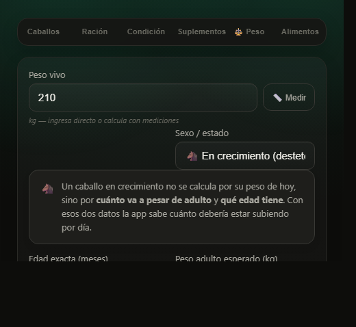

equinutricion.cl · Guía de Reproducción y crianza
Criar bien empieza antes del nacimiento. La nutrición de la yegua marca la salud del potrillo — pero "más comida" no es la respuesta: es la correcta en el momento correcto.
- Primeros ~8 meses de preñez: casi como mantención.
- Último tercio y lactancia: suben fuerte energía, proteína y minerales.
- Al potrillo no hay que sobrealimentarlo: el exceso daña huesos y articulaciones.
- El potrillo no se calcula por lo que pesa hoy, sino por su edad y el peso que va a tener de adulto.
- Mantén a la yegua en condición corporal ~5–6.
¿Cómo pega esto en el rendimiento?
El rendimiento de un caballo se empieza a jugar antes de que nazca: lo que come la yegua en el último tercio de la gestación y durante la lactancia marca el desarrollo del potrillo que después va a trabajar.
Y la yegua con cría al pie tiene una de las demandas nutricionales más altas de todas las categorías, por encima de un caballo en trabajo moderado. Alimentarla como a un caballo cualquiera es la forma más común de perder condición sin darse cuenta.
La gestación, en dos etapas
El potrillo crece muy poco durante la mayor parte de la preñez. Por eso, en los primeros ~7 a 8 meses, una yegua sana necesita prácticamente lo mismo que en mantención: buen forraje, agua y minerales. Sobrealimentarla en esta etapa solo la engorda.
La cosa cambia en el último tercio (últimos ~3 meses): ahí el feto gana la mayor parte de su peso, y suben los requerimientos de energía, proteína y minerales (calcio, fósforo, cobre y zinc para formar el esqueleto). Es cuando se ajusta la dieta hacia arriba, de forma gradual.
La lactancia: el pico
La mayor exigencia nutricional de la vida de una yegua no es la preñez, es la lactancia. En los primeros meses produce mucha leche y sus necesidades de energía y proteína son las más altas de todas. Necesita forraje de calidad en abundancia, agua a discreción y, muchas veces, un aporte extra de concentrado y minerales. Si se queda corta, adelgaza y le cuesta volver a preñarse.
El agua, otra vez protagonista
Una yegua en lactancia bebe mucho más de lo normal para producir leche. El agua limpia y disponible siempre no es un detalle: es parte de la ración.
El potrillo y el destete
El potrillo crece rápido y su esqueleto es delicado. El error más común y más grave es sobrealimentarlo con energía (mucho grano) buscando que crezca más rápido: eso se asocia a problemas del desarrollo óseo y articular (la llamada enfermedad ortopédica del desarrollo). El objetivo es un crecimiento parejo y moderado, no acelerado.
- Al principio, la leche materna cubre casi todo.
- Poco a poco prueba forraje; puede sumarse un concentrado formulado para potrillos, balanceado en minerales.
- El destete es estresante: hazlo gradual y cuida que no baje de peso ni se enferme.
- Vigila el balance de calcio, fósforo, cobre y zinc, claves para huesos sanos.
Y ese balance no es un detalle teórico. Un destete alimentado solo con heno de alfalfa y avena —la dieta que en muchos criaderos se da por buena— queda corto en cobre: recibe cerca de 39 mg al día cuando necesita unos 46,5. No se nota en el pelo ni en el ánimo; se nota en el cartílago, cuando ya es tarde. Basta sumar una fuente rica en cobre —la harina de soya, por ejemplo— para cubrirlo. Si le das un concentrado comercial, pregúntale al vendedor cuánto cobre trae: casi ningún fabricante chileno lo publica en el saco.
Crecer rápido no es crecer bien
Empujar el crecimiento del potrillo con exceso de grano puede dejarle problemas de por vida en huesos y articulaciones. Mejor parejo y sano que grande y apurado.
El potrillo se calcula distinto en la app
Cuando registras un caballo en crecimiento (del destete a los 3 años), la app te pide dos datos que no le pide a un adulto: la edad en meses y cuánto va a pesar de adulto. Si no sabes el segundo, míralo en la madre y en el padre — el caballo chileno adulto promedia unos 384 kg.
Con esos dos datos te dice cuántos kilos debería subir al mes, si viene atrasado y si la ración le está entregando más energía de la que le conviene. La escala de condición corporal 1 a 9 no se aplica acá: está hecha para caballos adultos, y en un potrillo lo que manda es el peso frente a su curva.

La condición de la yegua
Tanto para preñarse como para criar, la yegua rinde mejor en una condición corporal de 5 a 6: ni flaca ni obesa. Una yegua demasiado flaca tiene más problemas de fertilidad; una obesa, más riesgo metabólico. Evaluar su condición corporal periódicamente ayuda a llegar a cada etapa en el punto justo.
Con acompañamiento veterinario
La cría involucra manejo reproductivo, sanitario y nutricional. Esta guía te da el marco; el programa concreto de tu yegua y tu potrillo debe llevarlo tu médico veterinario.
Fuentes
- National Research Council (NRC). Nutrient Requirements of Horses, 6.ª ed. rev. (requerimientos de yegua gestante, lactante y del potrillo en crecimiento; el cálculo de cobre del destete sale de las tablas de requerimientos y de composición de alimentos del mismo volumen). The National Academies Press, 2007.
Contenido educativo con fines informativos; no reemplaza el diagnóstico ni el manejo reproductivo y nutricional que defina tu médico veterinario.